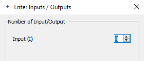

Command Reference#
Info
Case Sensitivity and Slashes: The following commands are case sensitive. Use forward slashes to indicate pathes.
Info
The notation used below for describing the parameters of individual commands is based on the Wirth Syntax Notation (WSN) :
- Parameter names in curly brackets denote that you can specify no value, one value, or multiple values for this parameter in the command line.
- Parameter names in square brackets denote optional parameters.
Creating, Loading, and Saving Designs#
LoadDesign#
| Command Syntax |
|---|
LoadDesign FileName |
Command for loading the design FileName. Specify in FileName the path to the file in your file system and the file name itself. Dont forget to state the file name extension (*.va or *.tcl). Use slashes for indicating the path to the design file.
Example: LoadDesign c:/VA_TCL/BaseAreaGray8.va
If there is already a design loaded: Close the currently loaded design via command CloseDesign before using command LoadDesign.
CreateDesign#
| Command Syntax |
|---|
CreateDesign Name Platform |
Command for creating a new design with the name Name for a hardware platform Platform. For specifying the target platform of the design, you can either use
- the VisualApplets library name for the platform (e.g., "mE4VQ4-GE"), or
- the full name of the platform (e.g., "microEnable IV VQ4-GE"). Dont forget to set the full name in quotes as required by Tcl syntax for arguments that contain spaces.
Using capitals in the names has no effect.
SaveDesign#
| Command Syntax |
|---|
SaveDesign FileName [SaveOption] |
Command for saving a design under FileName. Specify in FileName the path to the file and the file name itself. Use slashes for indicating the path to the design file.
Dont forget to add the file name extension to the file name.
- If you specify file extension .va, your design is saved in the standard VisualApplets design format. All contents of the file are saved. Use the *.va file format as primary data format for your VisualApplets designs.
- If you specify file extension .tcl in
FileName, a Tcl script is exported. Some contents of the design cannot be exported.
If you want to overwrite an existing file, set the optional parameter SaveOption to overwrite.
The following information is lost during export to Tcl script:
- The local modifications you made in a user library element instance (to adapt the instance to the surrounding design) are lost. If you re-import a Tcl script into VisualApplets, the instance is inserted as a fresh copy of the user library element. The content of the instance in your design has not been saved in Tcl.
- The text content of info boxes is kept in Tcl format. However, the formatting of info boxes is lost.
ChangePlatform#
| Command Syntax |
|---|
ChangePlatform Platform FileName [SaveOption] |
Command for converting the current design to another hardware platform Platform and saving the converted design as FileName.
To get an overview over all available hardware platforms, enter ChangePlatform ? - a list of the names of all available hardware platforms is returned. The currently selected hardware platform is displayed in the first entry of the list.
Specify the name of the desired hardware platform in parameter Platform. For specifying the target platform of the design, you can either use
- the VisualApplets library name for the platform (e.g., "mE4VQ4-GE"), or
- the full name of the platform (e.g., "microEnable IV VQ4-GE").
Using capitals in the names has no effect. Specify in FileName the path to the file (using forward slashes), the file name itself, and the file name extension. If you want to overwrite an existing file, set the optional parameter SaveOption to overwrite.
CloseDesign#
| Command Syntax |
|---|
CloseDesign [Mode] |
Command for closing the currently open design.
If you set the optional parameter Mode to Discard, the design will be closed even if it contains changes that you didnt save yet. The unsaved changes will be discarded.
If you use CloseDesign without using parameter Mode although the design containes changes that you didnt save yet, the command will be terminated and you receive an according error message.
SetDesignProperty#
| Command Syntax |
|---|
SetDesignProperty Key Value |
Use this command to enter design properties for the currently loaded design.
There are four keys you can use:
ProjectName(the name you want the project to give)Version(version of the design)Description(description of the project).-
TargetRuntime(specify here the operating system that will be used on the host PC(s) running this applet on the frame grabber.)The following values are allowed:
- Win64
- Win32
- Linux64
- Linux32
Example:
SetDesignProperty TargetRuntime Win64
SetDesignClock#
| Command Syntax |
|---|
SetDesignClock NewFrequency |
Command for setting the basic clock frequency of the FPGA (in MHz).
Developing a Design#
CreateProcess#
| Command Syntax |
|---|
| CreateProcess |
Command for creating a new process. VisualApplets automatically numbers new processes.
DeleteProcess#
| Command Syntax |
|---|
DeleteProcess ProcName |
Command for deleting a process of the name ProcName.
Example: DeleteProcess Process1
CreateModule#
| Command Syntax |
|---|
CreateModule OperatorType FullModuleName [InPortMultiplicity [OutPortMultiplicity {NamedPortMultiplicity}]]xPos yPos |
Command for creating an instance (module) of an operator OperatorType, and for positioning the module in the design window.
In OperatorType, simply state the name of the specific operator you want to create an instance from. You do not need to specify the library the operator belongs to.
With FullModuleName you define the module's hierarchical position within the design.
FullModuleName has the following syntax:
<HierLevelPath>/<ModuleName>
HierLevelPathyou use to define the path to a specific hierarchical level in the design. Start on process level. Use forward slashes.ModuleNameyou use for specifying the name you want the module to have. Alternatively, you can leaveModuleNameempty. In this case, you need to terminateFullModuleNamewith a slash; the module will be named automatically.
The position of the module in the design window you define via parameters xPos and yPos.
Example:
CreateModule BaseGrayCamera Process0/cam 100 100
The return value of function CreateModule is FullModuleName (i.e., the full hierarchical path to the module including the module name).
Using the optional parameters InPortMultiplicity and OutPortMultiplicity:
Many operators are instantiated with a fix number of ports. On the other hand, there are operators with a variable number of ports. During instantiation of an operator with a variable number of ports, you can define how many ports the module will have.
For example, when instanciating operator BRANCH, you can define how many output ports the instance will have:
Thus, the number of output ports O is variable. Ports that have a variable number of ports we call multiports.
Multiports are identified via their base name. In BRANCH, for example, the base name of the output ports is O. Via an index that is added to the base name, a specific port can be identified and addressed:
When using command CreateModule, you can use the optional value pair InPortMultiplicity and OutPortMultiplicity to specify the multiplicity of the vector inputs and the vector outputs of a module. This way, you can define the number of ports in instances (modules) of operators that have a variable number of ports, like, for example, operators BRANCH or ADD.
Example:
CreateModule BRANCH Process0/branchz 1 3 500 500
Defaults: If you dont use InPortMultiplicity and OutPortMultiplicity, or if you set them to 0, the module is created with the default number of inports and outports (i.e., setting one or both of the two values to 0 does not result in zero inports or zero outports.). How many ports are created per default depends on the operator type.
Examples:
CreateModule BRANCH Process0/branch 500 500
The default number of ports is created, 1 input and 2 output ports.
Examples:
CreateModule BRANCH Process0/branch 0 0 500 500
The default number of ports is created, 1 input and 2 output ports.
CreateModule BRANCH Process0/branch3 0 3 500 500
1 input (default) and 3 output ports are created.
CreateModule BRANCH Process0/branchx 3 3 500 500
1 input and 3 output ports are created. The definition of 3 input ports is ignored, as the operator type allows only 1 input.
CreateModule BRANCH Process0/branch4 0 4 500 500
Optional parameter NamedPortMultiplicity: For operators that have various kinds of multiports (i.e., operators that have other multiports than input I or output O), you can use parameter NamedPortMultiplicity to specify the base name of the multiport you want to have on the module, and to specify the multiplicity (number) of this multiport. The format of NamedPortMultiplicity is MultiportBaseName:Number. You can use NamedPortMultiplicity multiple times in one command line. Using NamedPortMultiplicity overrules anything you may have stated in parameters InPortMultiplicity or OutPortMultiplicity.
Example:
CreateModule BRANCH Process0/branch 0 0 O:3 100 100
The example command translates as follows: Create an instance (module) of operator BRANCH. Place it in process 0 on top level and give it the name branch. Provide three output ports (multiport base name O for output) and position the module in the design window at position y=100 pixel and x= 100 pixel.
For MultiportBaseName, use the base name of the multiport as you find it on the VA GUI. The MultiportBaseName name is displayed in the dialog that appears when instantiating an operator that has a varying number of ports. The multiport base name is the short name of the multiport (displayed in parantheses in the GUI).

The multiport base name here is I.
You also find the multiport base name in the mouse over information to a port:
Multiport base name here is I (followed by the index identifying the individual instances of multiport I on the module).
InstUserLibOperator#
| Command Syntax |
|---|
InstUserLibOperator LibName OperatorName FullModuleName xPos yPos |
Command for instantiating a user library element. Specify the user library via the parameter LibName, the name of the element (operator) in the library via the parameter OperatorName, the name you want to give the module in your design and where you want to place the module in the hierarchy via the parameter FullModuleName, as well as the position of the module in the design window via the parameters xPos, and YPos.
InstCustomLibOperator#
| Command Syntax |
|---|
InstCustomLibOperator LibName OperatorName FullModuleName xPos yPos |
Command for instantiating a custom library element. Specify the user library via the parameter LibName, the name of the element (operator) in the library via the parameter OperatorName, the name you want to give the module in your design and where you want to place the module in the hierarchy via the parameter FullModuleName, as well as the position of the module in the design window via the parameters xPos, and YPos.
DeleteModule#
| Command Syntax |
|---|
DeleteModule FullModuleName |
Command for deleting the module FullModuleName.
FullModuleName has the following syntax: <HierLevelPath>/<ModuleName>.
HierLevelPathyou use to specify the path to the hierarchical level in the design where the module is located. Start on process level. Use forward slashes.ModuleNameyou use to specify the name of the module you want to delete.
Simulation modules can't be deleted via this command. For deleting simulation modules, use the command DeleteSimModule.
ConnectModules#
| Command Syntax |
|---|
ConnectModules FromModule FromModuleOutputPort ToModule ToModulePort [x1 [y2 x3]] |
Command for connecting module ports.
The parameters FromModule and ToModule are hierarchical names with the syntax: <HierLevelPath>/<ModuleName>.
Inner hierarchical box nodes (i.e. inner nodes for connecting hierarchical box ports) are identified via the prefixes INBOUND# or OUTBOUND#.
Example: The two inbound nodes of the hierarchical box in the figure below need to be addressed by INBOUND#I000 and INBOUND#I001.
Via the optional parameters x1, y2, and x3 you can define the geometry of the connecting polygon: horizontal line from FromModuleOutputPort to X position x1, vertical line to Y position y2, horizontal line to X position x3, vertical line to height of ToModulePort, horizontal line to ToModulePort.
DisconnectModules#
| Command Syntax |
|---|
DisconnectModules FullModuleName ModulePort |
Command for deleting the link that is connected to port ModulePort of module FullModuleName.
Example:
DisconnectModules Process0/Cam1 O
CreateComment#
| Command Syntax |
|---|
CreateComment FullBoxName Text xPos yPos |
Command for creating a comment box.
The syntax of FullBoxName is <HierLevelPath>/<BoxName>.
HierLevelPathyou use to define the path to a specific hierarchical level in the design. Start on process level. Use forward slashes.BoxNameyou use for specifying the name you want the comment box to have. Alternatively, you can leaveBoxNameempty. In this case, you need to terminateFullBoxNamewith a slash; the module will be named automatically.
Example:
CreateComment Process0/MyComment "This is my comment." 400 400
For the comment box content Text you can use Unicode characters. Dont forget to set the comment in quotes. If you use characters that are not part of ASCII, use the according TCL syntax to represent Unicode, for example:
[encoding convertfrom utf-8 "A-Umlaut: \xc3\x84"]
The position of the comment box in the design window you define via the parameters xPos and yPos.
The return value of function CreateComment is FullBoxName (the full hierarchical path to the comment box including the name of the comment box).
DeleteComment#
| Command Syntax |
|---|
DeleteComment FullBoxName |
Command for deleting comment box FullBoxName.
The syntax of FullBoxName is <HierLevelPath>/<BoxName>.
HierLevelPathyou use to specify the path to the hierarchical level in the design where the comment box is located. Start on process level. Use forward slashes.BoxNameyou use to specify the name of the comment box you want to delete.
Example:
DeleteComment Process0/MyComment
Box name information: To get the name of the comment box you want to delete, you can use TCL to query which boxes are placed in a design, see TCL example QueryDesign.tcl in your VisualApplets installation folder at <VA installation directory>\Examples\AdvancedVAFunctions\Tcl Scripting\QueryDesign.tcl.
Parameterizing Operators and Links#
SetModuleParam#
| Command Syntax |
|---|
SetModuleParam FullModuleName ParameterName [FieldIndex] Value {OtherValues} |
Command for setting a module parameter.
Attention: Use this command only for setting an existent parameter to a specific value. You cannot use this command for creating metadata parameters. (For creating new metadata parameters, use command SetParamString instead.)
Example:
SetModuleParam Process0/HierchBox1/module6 XLength 512
Field parameters: If you refer to a field parameter, you need to specify parameter FieldIndex before specifying a Value. Only when referring to field parameters, you can specify further values after Value.
Example for editing field parameters:
Before entering the command:
Entering the command
SetModuleParam Process0/module3 LUTcontent 4 12 13 14
has the following result:
Command SetModuleParam has the same functionality as (depending on the parameter you use) the commands SetParamInt, SetParamFloat, SetParamEnum, SetParamString, SetParamIntField, and SetParamFloatField. However, these commands are for export only.
Use SetModuleParam when you are writing scripts manually.
Exception: If you want to add a new metadata parameter, you need to use SetParamString when writing scripts manually. See definition of command SetParamString.
SetModuleParamProperty#
| Command Syntax |
|---|
SetModuleParamProperty FullModuleName ParameterName PropertyName PropertyValue {OtherPropertyValue} |
Command for changing the properties of a module parameter. This command may replace SetModuleParamType. Single property names may have multiple values. You can change the following properties:
access: You can list several flags here as value:
write: If the parameter can be switched in this direction, (for instance in the operatorLinkParamTranslator), it becomes a write-parameter.read: If the parameter can be switched in this direction, (for instance in the operatorLinkParamTranslator), it becomes a read-parameter.dynamic: If the parameter can be either dynamic or static, it hereby becomes a dynamic parameter (this replaces the commandSetParamDynamic).static: If the parameter can be either dynamic or static, it hereby becomes a static parameter (this replaces the commandSetParamStatic).
position: Definition of an integer value for the parameter PropertyValue, which defines the position of the parameter in a list of parameters in a hierarchical box.
SetParamInt#
| Command Syntax |
|---|
SetParamInt FullModuleName ParameterName Value |
Used for TCL export only. Command for setting an integer parameter.
Attention: This command is used in TCL export from VisualApplets to a *.tcl file.
Dont use this command in scripts you write manually. Use command SetModuleParam instead.
SetParamFloat#
| Command Syntax |
|---|
SetParamFloat FullModuleName ParameterName Value |
Used for TCL export only. Command for setting a floating point parameter.
Attention: This command is used in TCL export from VisualApplets to a *.tcl file.
Dont use this command in scripts you write manually. Use command SetModuleParam instead.
SetParamEnum#
| Command Syntax |
|---|
SetParamEnum FullModuleName ParameterName Value |
Used for TCL export only. Command for setting an addressed enum parameter. Value is the string of the enum value.
Example (for an instance of operator SetSignalStatus that is placed on level Process0 and has the name SetSigSt):
SetParamEnum Process0/SetSigSt Mode High
Sets parameter Mode of operator SetSigSt that is located in Process0 to High.
Attention: This command is used in TCL export from VisualApplets to a *.tcl file.
Dont use this command in scripts you write manually. Use command SetModuleParam instead.
SetParamString#
| Command Syntax |
|---|
SetParamString FullModuleName ParameterName Value |
Use this command to define metadata parameters for a specific module.
In TCL export files, command SetParamString is used for setting any string parameter, even if it is an existent module parameter. However, this is not practicable in scripts you write manually.
Attention: When writing your own scripts, dont use this command for setting an existent module parameter to a new value, even if the module parameter is of type string.
For setting an existent module parameter to a new value, always use command SetModuleParam in your scripts.
SetParamIntField#
| Command Syntax |
|---|
SetParamIntField FullModuleName ParameterName Index Value {OtherValues} |
Used for TCL export only. Command for setting a field parameter of type integer. Setting field Index to Value1, the following fields are populated with the following values in the given order.
Attention: This command is used in TCL export from VisualApplets to a *.tcl file.
Dont use this command in scripts you write manually. Use command SetModuleParam instead.
SetParamFloatField#
| Command Syntax |
|---|
SetParamFloatField FullModuleName ParameterName Index Value {OtherValues} |
Used for TCL export only. Command for setting a field parameter of type float. Setting field Index to Value1, the following fields are populated with the following values in the given order.
Attention: This command is used in TCL export from VisualApplets to a *.tcl file.
Dont use this command in scripts you write manually. Use command SetModuleParam instead.
SetParamStatic#
| Command Syntax |
|---|
SetParamStatic FullModuleName ParameterName |
Used for TCL export only. Command for making a parameter static. If a parameter can be static as well as dynamic, in most cases the parameter is set to dynamic per default. Use this command to set such a parameter to static.
Attention: This command is used in TCL export from VisualApplets to a *.tcl file.
Dont use this command in scripts you write manually. Use command SetModuleParamType instead.
SetParamDynamic#
| Command Syntax |
|---|
SetParamDynamic FullModuleName ParameterName |
Used for TCL export only. Command for making a parameter dynamic. Works only if the parameter can be dynamic at all.
Attention: This command is used in TCL export from VisualApplets to a *.tcl file.
Dont use this command in scripts you write manually. Use command SetModuleParamType instead.
SetModuleParamType#
| Command Syntax |
|---|
SetModuleParamType FullModuleName ParameterName TypeFlag {OtherTypeFlags} |
Command for changing the type of a parameter. The following type flags are available:
Dynamic: If the parameter can be dynamic or static, this flag makes the parameter a dynamic parameter (replaces commandSetParamStatic).Static: If the parameter can dynamic or static, this flag makes the parameter a static parameter (replaces commandSetParamStatic).
Dynamic and Static mutually exclude each other.
When using type flags Dynamic or Static, this comand has the same functionality as the commands SetParamStatic and SetParamDynamic. However, use SetModuleParamType when you are writing scripts manually.
SetLinkParam#
| Command Syntax |
|---|
SetLinkParam FullModuleName PortName ParameterName Value {OtherParameterName OtherParameterValue} |
Command for configuring the format of links. The link is identified via the connection node (port) of a module. The names of the link format parameters are the same as in the VisualApplets GUI.
Attention: When writing your TCL script manually, the command is only applicable for parameters that can be changed. If you try to set a link parameter that cannot be changed, you will get an according error message:
SetResourceMapping#
| Command Syntax |
|---|
SetResourceMapping FullModuleName ResourceName [Index] NewMapping |
Command for changing the mapping of resources to a module. The resource ResourceName will be mapped to the new index NewMapping. In case the module allocates multiple resources of the same type, use the optional parameter Index for selecting the resource.
SplitLink#
| Command Syntax |
|---|
SplitLink FullModuleName PortName [Number] |
Command for creating a module BRANCH. The new branch module is inserted on the link that goes out of module FullModuleName on port NodeName. The new branch module has Number outgoing ports. If you dont use the optional parameter Number, the new branch module has two out ports.
The return value of function SplitLink is the FullModuleName of the new branch module (full hierarchical path to the module, including the module name).
Querying Design Structure and Design Details#
GetDesignProperty#
| Command Syntax |
|---|
GetDesignProperty PropertyName |
This command retrieves design properties. You can use the following values for PropertyName:
ProjectName:name of the projectFileName: path to and name of the currently loaded design file *.vaHardwarePlatform: library name of target hardware platform, for example mE4VQ4-GEVersion: version of the designDescription: description of the projectLoaded: design is loaded (1 or 0)
Design property Loaded can be requested while no design is loaded at all. This doesnt cause an error message. Requesting any other design property while no design is loaded causes an error message.
GetDesignClock#
| Command Syntax |
|---|
| GetDesignClock |
This command returns the basic clock frequency of the FPGA (in MHz).
GetProcesses#
| Command Syntax |
|---|
| GetProcesses |
This command returns a list with the names of all processes of the design.
GetSubModules#
| Command Syntax |
|---|
GetSubModules HierarchyName |
This command returns a list with the names of the modules that are located in the requested hierarchy HierarchyName.
For each sub-module, the full hierarchical name is listed.
GetParentHier#
| Command Syntax |
|---|
GetParentHier FullElementName |
This command returns the hierarchical name (FullModuleName) of the parent of stated element FullElementName, that is, the FullModuleName of the hierarchical element in which element FullElementName is located.
FullElementName can be a module, a simulation module, or a comment box.
GetModules#
| Command Syntax |
|---|
GetModules Scope Specifier {ModuleList} |
This command filts specific modules in the design. The command returns a list with modules that have the characteristic you specify via Scope and Specifier. The list contains the FullModuleName for all found modules (path to modules including the individual module name). If you dont want to search design-wide, but only in a specific set of modules, you can specify these modules in ModuleList (via their FullModuleName).
Scope can have the following values:
pattern: UseSpecifieras a wildcard expression forFullModuleName. If you state * as specifier, all modules of the design are returned.flat: UseSpecifieras a wildcard expression for theFullModuleNameof modules (like with pattern). Hierarchical boxes will not be returned.ordered: Returns all modules of the design. UseSpecifierto define a sorting pattern. You have the following options:path: modules are sorted by their position in the design graph (i.e., in the order of the data stream as it runs through the modules during simulation).name: modules are sorted alphabetically by theirFullModuleName.
operatorType: UseSpecifierto define the operator type of the modules you are looking for (O, M, P, O+P, M+P, unknown).operator: For getting all instances of a specific operator. UseSpecifierto name the operator name (for example, NOP).libraryType: UseSpecifierto define a specific library type. All modules in the design that are instances of operators contained in libraries of this type are returned. The following values are allowed: operator, user, and custom (see alsoGetModuleProperty).library: UseSpecifierto define a specific library. All modules that are instances of operators of this library are returned.version: UseSpecifierto define a specific operator version. All modules that are instances of operators of this version are returned.
GetModulePorts#
| Command Syntax |
|---|
GetModulePorts FullModuleName [Scope] |
This command returns a list with the names of all ports of the specified module. You can use the optional parameter Scope to filter for specific ports:
inputs: only the input ports are returnedoutputs: only the output ports are returnedall: all ports of the module are returned (default)
GetModulePortProperty#
| Command Syntax |
|---|
GetModulePortProperty FullModuleName PortName Property |
This command retrieves the properties of a module port. The following values for Property are available:
isConnected: Returns 1 if port is connected; otherwise 0.position: Returns position of specified port in the diagram (design window) as a list (xPos,yPos). IfPortNamespecifies an inner hierarcical box node (for example,INBOUND#I000), the position of this node within the hierarchical box design window is returned.
GetModuleProperty#
| Command Syntax |
|---|
GetModuleProperty FullModuleName Property |
This command returns the properties of a module.
The following values for Property are available:
status: Returns 0 if module is not in error status; otherwise returns error code.operator: Returns name of operator the module is an instance of, for exampleBRANCH.operatorType: Returns operator type (O, P, M, unknown). Unknown is returned for hierarchical boxes and user library modules.libraryType: Returns the library type of the library the operator stems from. One of the following values is returned:operator,user,custom.version: Returns the version of the operator the module is an instance of.type: Returns the module type. One of the following values is returned:process,hierBox,operator,user,custom.isHierModule: Returns 1 if the stated module is capable of containing submodules; returns 0 if the stated module cannot have sub-modules.isProtected: Returns 1 if the module is an instance of a protected library element.library: Returns the name of the library the operator stems from.position: Returns the position in a design window as a list (xPos,yPos).resources: Returns a list of pairs (ResourceName,ResourceMapping)name: Returns the module name.
GetModuleParams#
| Command Syntax |
|---|
GetModuleParams FullModuleName {ParameterNames} |
Returns a list of module parameters and their current values.
If you want to get all parameters of the module together with the currently set values, use command GetModuleParams only with parameter FullModuleName.
Example:
If you want to get only the values of specific parameters, you can optionally limit the output to the parameters {ParameterNames}. The order of the output corresponds to the order of the parameter names you state in {ParameterNames}.
Example:
GetModuleParamProperty#
| Command Syntax |
|---|
GetModuleParamProperty FullModuleName ParameterName Property |
Command for retrieving parameter properties.
For the parameter Property, the following values are available:
status: Returns 0, if the parameter is not in error status; otherwise returns error code.type: Returns the parameter type:int,intField,float,floatField,enum, orstring.access: Returns direction of access:writeorread).unit: Returns the unit of the parameter.range: For integer and float data types, the command returns the value range as a list containing the three entriesMin,Max,Step. For enum parameters, it returns a list of pairs of enum names and enum values.size: Returns the size of the field. Only forIntFieldandFloatFieldparameters.isDynamic: Returns 1 if the requested parameter is dynamic; otherwise returns 0.isStatic: Returns 1 if the requested parameter is static; otherwise returns 0.isEditable: Returns 1 if the requested parameter can be edited; otherwise returns 0.
GetLinkParams#
| Command Syntax |
|---|
GetLinkParams FullModuleName PortName {ParameterNames} |
Returns a list of link parameter names and the currently set values for a specific link. The link is identified via the connection node (port) of a module. The returned list states value pairs <ParameterName><Value> that correspond to the pairs you would use to set link parameters via SetLinkParam.
If you want to get all parameters of the link together with the currently set values, use command GetLinkParams only with parameters FullModuleName and PortName.
If you want to get only the values of specific parameters, you can optionally limit the output to the parameters {ParameterNames}. The order of the output corresponds to the order of the parameter names you state in {ParameterNames}.
Example:
GetLinkParamProperty#
| Command Syntax |
|---|
GetLinkParamProperty FullModuleName PortName ParameterName Property |
This command retrieves the properties of a specific link parameter.
The following values for the parameter Property are possible:
status: Returns 0 if the parameter is not in error condition; otherwise returns error code.isEditable: Returns 1 if parameter value can be changed; otherwise returns 0.range:- For integer data types, the command returns the value range either as a list containing three elements (Min, Max, Step), or as a list containing all allowed values. You distinguish the two kinds of lists as follows: The Min-Max-Step list contains 3 list elements; the third list element is smaller or equal to the second list element. A list stating all allowed values starts with the smalles value and ends with the highest value. If only one value is allowed, the value is returned in format {Value Value 1}, for example, { 4 4 1} for min=4, max=4, step=1.
- For enum parameters, the command returns a list of pairs of enum names and enum values.
GetLinkProperty#
| Command Syntax |
|---|
GetLinkProperty FullModuleName PortName Property |
This command returns a specific property of a specific link. If, with FullModuleName and PortName, you address the port of a hierarchical box, the command works as long as there is a link to or from this port within the hierarchical box.
The following options for the parameter Property are available:
status: Returns 0 if everything is fine (i.e., if the parameter settings of the link source and the link target match, and the DRC doesnt find an error); otherwise returns error code.from: Returns the starting point of the link. The starting point can be either the out port of a foregoing module, or an inner hierarchical box node (INBOUND#...) the link is connected to. The command returns a list containing the two valuesFullModulennameandPortName.to: Returns the end point of the link. The end point can be either the in port of a following module, or an inner hierarchical box node (OUTBOUND#...) the link is connected to. The command returns a list containing the two valuesFullModulennameandPortName.source: Returns a list containing the value pairsFullModulennameandPortNamefor all foregoing links up to the source of the link. The link chain is followed up backwards through the hierarchies, from the module you state inFullModuleNameback to the starting point. The order of the elements within the returned list corresponds to the backward-course of the lookup (the source module is the last entry in the list).dest: Returns a list containing the value pairsFullModulennameandPortNamefor all following links up to the target module of the link. The link chain proceeds forwards through the hierarchies, from the module you state inFullModuleNameup to the end (sink). The order of the elements within the returned list corresponds to the forward-course of the lookup the target module (destination) is the last entry in the list.hasConnectedSimModule: Returns 1 if a simulation module is connected to the link; returns 0 if no simulation module is connected.connectedSimModule: Returns the hierarchical name of a connected simulation module.
GetSimModules#
| Command Syntax |
|---|
GetSimModules Type Scope Specifier |
This command retrieves the FullModuleName of simulation sources (Type = source) or simulation probes (Type = probe) within a design. The command returns a list with simulation modules that have the characteristic you specify via the parameters Scope and Specifier. The list contains the FullModuleNames (hierarchical pathes to the indivudal simulation modules including the individual pathes).
Scope provides the following options:
hierarchy: Define a specific hierarchy in the parameterSpecifier.pattern: Use the parameterSpecifieras a wildcard expression forFullModuleNamesof simulation modules. If you state * as specifier, all source or probe simulation modules of the design are returned.
GetCommentBoxes#
| Command Syntax |
|---|
GetCommentBoxes Scope Specifier |
This command retrieves comment boxes in a design. The command returns a list with all comment boxes that have the characteristic you specify via the parameters Scope and Specifier. The list contains the FullElmentNames (hierarchical names including box name).
Scope provides the following options:
hierarchy: Define a specific hierarchy (viaHierLevelPath) inSpecifier.pattern: UseSpecifieras a wildcard expression for theFullElementNameof comment boxes. If you state * as specifier, all comment boxes in the design are returned.
GetCommentProperty#
| Command Syntax |
|---|
GetCommentProperty FullBoxName Property |
This command retrieves the properties of a comment box.
FullBoxName has the following syntax: <HierLevelPath>/<BoxName>.
HierLevelPathyou use to specify the path to the hierarchical level in the design where the comment box is located. Start on process level. Use forward slashes.BoxNameyou use to specify the individual name of the comment box.
Property has the following options:
content: The content of the comment box is returned.position: the X and Y position of the left upper corner of the comment box in the design window are returned.
Box name information: To get the name of the comment box you want to get details about, you can use TCL to query which boxes are placed in a design, see TCL example QueryDesign.tcl in your VisualApplets installation folder (e.g.,<YourVisualAppletsInstallationDirectory>\Examples\AdvancedVAFunctions\Tcl Scripting\QueryDesign.tcl)
Editing the Design Further Commands#
Move#
| Command Syntax |
|---|
Move FullModuleName [HierNodeName] PosX PosY |
Command for re-positioning a module, a hierarchical box node, a comment box, or a simulation module to a new position within the design window.
Use the parameter [HierNodeName] only for selecting a hierarchical box node. Nodes within hierarchical boxes are identified via the prefix INBOUND# or OUTBOUND#(like you do when using command ConnectModules), for example, INBOUND#I000.
Select#
| Command Syntax |
|---|
Select FullModuleName [PortName] |
Command for selecting a module, a simulation module, a comment box, or a link. Use parameter PortName only for selecting a link (the link is identified via the port that connectes the link with the addressed module).
ClearSelection#
| Command Syntax |
|---|
ClearSelection [ParentHierarchy] |
Command for deleting a selection of elements (modules, hierarchical box nodes, links, comment boxes, or simulation modules).
Use the optional parameter ParentHierarchy to deselect all elements on the hierarchical level ParentHierarchy.
If you dont use ParentHierarchy, element selection is deleted globally, and after carrying out the command no elements within the design are selected.
CopySelected#
| Command Syntax |
|---|
CopySelected [ParentHierarchy] |
Command for copying the selected elements on hierarchical level ParentHierarchy. If you dont use the optional parameter ParentHierarchy, the selected elements on the hierarchical level of the currently active design window are copied.
DeleteSelected#
| Command Syntax |
|---|
DeleteSelected [ParentHierarchy] |
Command for deleting the selected elements on hierarchical level ParentHierarchy. Only the selected modules of the hierarchical level you specify under ParentHierarchy are deleted, the selected modules on other levels remain. If you dont use the optional parameter ParentHierarchy, the selected elements on the hierarchial level of the currently active design window are deleted.
CutSelected#
| Command Syntax |
|---|
CutSelected [ParentHierarchy] |
Command for cutting out the selected elements on hierarchical level ParentHierarchy. If you dont use the optional parameter ParentHierarchy, the selected elements on the hierarchial level of the currently active design window are cut out.
GetSelected#
| Command Syntax |
|---|
GetSelected Scope [ParentHierarchy] |
Returns a list of selected elements on the hierarchical level ParentHierarchy. Via Scope you define if you want to get a list of selected modules (Modules), of selected links (Links), of selected simulation modules (SimModules), or of selected comment boxes (CommentBoxes).
If you dont use the optional parameter ParentHierarchy, the selected elements on the hierarchial level of the currently active design window are returned.
If you use Scope = Modules/SimModules/CommentBoxes, a list of FullModuleNames (hierarchical pathes to the respective modules including the module names) is returned.
If you use Scope = Links you get a list of link-identifying tuples consisting of FullModuleName and PortName (the port the link is connected to).
Paste#
| Command Syntax |
|---|
Paste [ParentHierarchy] [xPos yPos] |
Command for pasting elements from the clipboard into the hierarchical level ParentHierarchy. (i.e., pasting elements that have been previously copied or cut out).
If you dont use the optional parameter ParentHierarchy, the elements are pasted to the hierarchial level of the currently active design window.
Use optional parameters xPos and yPos for defining the top left position of the inserted content in the design window.
InsertModulePort#
| Command Syntax |
|---|
InsertModulePort FullModuleName PortName [Where] |
Command for inserting a new module port next to port PortName.
Attention: You can only insert those ports that you can specify a multiplicity for in command CreateModule.
Where offers the following options:
beforeorabove: new port is inserted directly before portPortName.afterorbelow: new port is inserted directly after portPortName(default).
If you dont use the optional parameter Where, the new port is inserted directly after port PortName.
RemoveModulePort#
| Command Syntax |
|---|
RemoveModulePort FullModuleName PortName |
Command for deleting a module port.
Attention: You can only delete those ports that you can specify a multiplicity for in command CreateModule. The minimum number of a given kind of port will always remain. If you try minimize further below the minimum, you will get an according error message. Example: While you can delete the third output port of operator Branch (port name: O002), the two minimum output ports (O001 and O000) cannot be deleted:
AppendModulePort#
| Command Syntax |
|---|
AppendModulePort FullHierBoxName Direction |
Command for adding an input port or an output port to a hierarchical box.
FullHierBoxName has the same syntax as FullModuleName.
Direction=input: an input port is created.
Direction=output: an output port is created.
Rename#
| Command Syntax |
|---|
Rename FullModuleName NewName |
Command for renaming a module or simulation box. In NewName you specify the new individual name of the instance without the hierarchical path.
Example:
Rename Process0/module1 DMA
SetActiveWindow#
| Command Syntax |
|---|
SetActiveWindow Hierarchy |
Command for opening (and setting active) the design window of hierarchy Hierarchy in VisualApplets.
GetActiveWindow#
| Command Syntax |
|---|
| GetActiveWindow |
Returns information about the hierarchical level of the design window that is currently open and active in VisualApplets.
Simulating the Design#
CreateSimSource#
| Command Syntax |
|---|
CreateSimSource FullSimModuleName xPos yPos |
Command for creating a simulation source module, and for positioning the module in the design window.
FullSimModuleName has the following syntax: <HierLevelPath>/<SimModuleName>
HierLevelPathyou use to define the path to a specific hierarchical level in the design.SimModuleNameyou use for specifying the individual name you want the simulation source module to have. Alternatively, you can leaveSimModuleNameempty. In this case, you need to terminateFullSimModuleNamewith a slash; the module will be named automatically.
The return value of function CreateSimSource is the FullModuleName of the new simulation source module (full hierarchical path to the simulation source module including the module name).
CreateSimProbe#
| Command Syntax |
|---|
CreateSimProbe FullSimModuleName xPos yPos |
Command for creating a simulation probe module, and for positioning the module in the design window.
FullSimModuleName has the following syntax: <HierLevelPath>/<SimModuleName>
HierLevelPathyou use to define the path to a specific hierarchical level in the design.SimModuleNameyou use for specifying the name you want the simulation probe module to have. Alternatively, you can leaveSimModuleNameempty. In this case, you need to terminateFullSimModuleNamewith a slash; the module will be named automatically.
The return value of function CreateSimProbe is the FullModuleName of the new simulation probe module (full hierarchical path to the simulation probe module including the module name).
DeleteSimModule#
| Command Syntax |
|---|
DeleteSimModule FullSimModuleName |
Command for deleting a simulation module (simulation source or simulation probe).
The syntax of FullSimModuleName is the same as the syntax of FullModuleName.
ConnectSimModule#
| Command Syntax |
|---|
ConnectSimModule FullSimModuleName TargetModuleName TargetModulePortName [xPos yPos] |
Command for connecting a simulation module to a link. You identify the link via the module port the link is connected to.
The syntax of FullSimModuleName and TargetModuleName is the same as the syntax of FullModuleName. The syntax of TargetModulePortName is the same as the syntax of PortName.
Module TargetModuleName and simulation module FullSimModuleName need to be located in the same hierarchy to connect them with each other.
Optionally, you can define the position of the connecting point on the link via xPos and yPos.
DisconnectSimModule#
| Command Syntax |
|---|
DisconnectSimModule FullSimModuleName |
Command for detaching the simulation module from a link.
SetSimModuleProperty#
| Command Syntax |
|---|
SetSimModuleProperty FullSimModuleName Key Value {OtherValue} |
Command for defining the properties of a simulation module.
Use Key to identify the property you want to set. Set the individual properties in the format stated below. Available are the following properties and according value formats:
pixelAlignmentOffset BITS
Use this parameter to specify the alignment offset as integer value BITS.
imageFileSubPixels NUMBER
Use this parameter to specify the number of file pixels that are assigned to a link pixel as integer value NUMBER.
Source: NUMBER pixels are conflated to one pixel.
Probe: One pixel is split up into NUMBER pixels in the file.
imageFilePixelBits BITS
Use this parameter to specify the bit width in the image file as integer value BITS. Allowed are the values 1, 8, and 16.
imageFileNormalize CHOICE
Use this property to configure the way simulation result images are saved.
If you want to save a 1-bit simulation result in an 8-bit file format, set imageFileNormalize to 1. Normalizing in this context means mapping 0 to 0 (black) and 1 to 255 (white).
The following values for CHOICE are possible: CHOICE = "1" | "0"
cropRect [imageNr] X Y WIDTH HEIGHT
This property is only available for simulation sources. Specifying the image index [imageNr] is mandatory. Use this parameter to crop an image and to specify the region of the image (ROI) you want to use for simulation. With X and Y you define the left upper corner of the ROI.
currentImage INDEX
Use this parameter to select an image within the simulation module. Specify INDEX as integer value.
AddImage#
| Command Syntax |
|---|
AddImage FullSimModuleName ImageFileName1 {OtherImageFileName} [ImageLibrary] |
Command for adding an image to a simulation source module. If the number of kernel elements of the link the simulation source is connected to is > 1, you need to specify as many images as the kernel has elements.
Optionally, you can state the image library you want to use ( ImageLibrary = "Native" | "ImageMagick").
RemoveImage#
| Command Syntax |
|---|
RemoveImage FullSimSourceName {ImageIndex} |
Command for deleting one or all images from a simulation source module. Use the optional parameter ImageIndex to specify the image you want to delete. If you set ImageIndex to -1, or if you dont use ImageIndex at all, all images in the simulation module are deleted.
Simulate#
| Command Syntax |
|---|
Simulate ProcessingCycles [SaveLogfilename] |
Command for simulating a design. Use parameter ProcessingCycles for defining how many processing cycles you want to carry out with with the command.
Use the optional parameter SaveLogfilename to save the log of the carried-out cycles to file. Specify in SaveLogfilename the path to the file and the file name itself. Use file name extension *.html, as the log is written in HTML format. Use forward slashes for indicating pathes.
Example:
Simulate 1 c:/temp/simlog.html
ResetSimulation#
| Command Syntax |
|---|
| ResetSimulation |
Command for resetting the simulation engine. As effect, all simulation probes in the design are cleared.
GetSimModuleProperty#
| Command Syntax |
|---|
GetSimModuleProperty FullSimModuleName Property [ImageIndex [LineIndex [LineCount] ] ] |
Command for retrieving the properties of a simulation module. The following properties are available:
isConnected: returns 1 if simulation module is connected to a link; otherwise returns 0.
connectedLink: Returns a list containing the FullModuleName of a module the link is connected to, and the port of the module the link is connected to. The return value always describes the link by a real module port, i.e., it never states an innner H box node (like, for example, INBOUND#I000 or OUTBOUND#O000).
isSource: Returns 1 if the simulation module is aSimulationSource; otherwise returns 0.isProbe: Returns 1 if the simulation module is aSimulationProbe; otherwise returns 0.position: Returns position of the simulation module in the program window as a list (xPos,yPos).imageCount: Returns the number of images in the simulation module (=value ofIMAGECOUNT).imageSize: Using parameterImageIndexis mandatory. Returns the size of the image you specify inImageIndexas a list{Width <WIDTH> Height <HEIGHT>}.pixelAligmentOffset: Returns the alignment offset as integer valueBITS.imageFileSubPixels: Returns the number of file pixels that are assigned to a link pixel as integer valueNUMBER.imageFilePixelBits: Returns the setting for bit width in the image file as integer valueBITS. Allowed are the values 1, 8, and 16.imageFileNormalize: Returns 1 or 0 according to the settings for saving simulation result images. If set to 1, during saving a 1-bit simulation result to a file in 8-bit *format: 0 is mapped to 0 (black) and 1 is mapped to 255 (white), i.e., the simulation images format is normalized.cropRect: This property is only available for simulation sources. Using parameterImageIndexis mandatory. Returns a list with the following entries:{X Y WIDTH HEIGHT}.currentImage: Returns the currently selected image as integer valueINDEX.
SetSimImageData#
| Command Syntax |
|---|
SetSimImageData FullSimModuleName ImageIndex KernelRow KernelCol Component X Y Width Value {OtherValues} |
Command for overwriting one pixel or several neighboring pixels in an image within a simulation module (source or probe).
You can use this command_
- in SimSources for altering an image for simulation.
- in SimProbes for visualizing the results within an image.
The alteration of the image is volatile. As soon as you select another image of the same simulation module or re-select the altered image, the altered image is loaded anew from hard disk and your alterations are discarded. (You select another image if you enter a command for a new image ImageIndex (of the same simulation module) in the TCL console, or if you click on another image of the same simulation module in the viewer of the VisualApplets GUI.)
However, you can make your alteration permanent by saving the altered image as long as it is active under a new file name.
You can use a volatilely altered image for simulation. However, only one image per SimSource module can be used for simulation in altered condition (because altering another image in the same SimSource resets the pixel values of the image you altered before). You can use as many volatilely altered images as you want for simulation as long as you have only one volatilely altered image per simulation module.
One value per Pixel: Command SetSimImageData allows you to write exactly one value per pixel. Thus, in gray scale pixels, you need to carry out command SetSimImageData only once to write the complete color information per pixel. In color pixels, you will be able to write only one of the three color components per pixel. Thus, if you want to change all three color components of color pixel(s), you have to carry out command SetSimImageData three times.
Writing in images with kernels: When you are writing into images that have a kernel, you need to specify (in addition to the exact position of the (first) pixel you want to overwrite) which kernel element of the respective pixel(s) you want to overwrite when using command SetSimImageData. If you want to overwrite all kernel elements, you need to carry out command SetSimImageData exactly KernelRow * KernelCol times.
To use the command:
Before using the command, close the image viewer of the simulation module the image you want to change is located in.
Specify the image you want to alter with index ImageIndex. Attention: ImageIndex starts with 0, whereas the numbering of the images in a simulation module in the VisualApplets GUI starts with 1. The values map as follows:
ImageIndex = 0 referes to image 1 in the viewer of the VisualApplets GUI.
ImageIndex = 1 referes to image 2 in the viewer of the VisualApplets GUI.
ImageIndex = 2 referes to image 3
and so forth.
Information: On the GUI of VisualApplets, the index of the image that is used in the next simulation cycle is displayed in square brackets and marked by a preceeding sim (e.g., sim[2]).
Use KernelRow and KernelCol to specify the kernel element you are going to change a pixel value for.
Which size the kernel of your simulation image has you can see in the link properties of the link the simulation module is connected to. A link that has a kernel size bigger than 1 pixel is always preceeded by an instance of an operator that allows specifying kernels (as, for example, operator FIRkernelNxM).
Counting kernel columns and kernel rows starts with 0. Thus, if you have a kernel with only one element, set both values (KernelRow and KernelCol) to 0:
For a kernel with 4 elements, you identify an individual kernel element as follows:
For a kernel with 9 elements, you identify an individual kernel element as follows:

Use parameter Component to specify the color component of the pixel you want to set. In gray scale images, set Component to 0. In multi-component images (color), specify the component you want to write via its position in the color model. Example: Set Component to 0 if you want to address the red component in an RGB image, set Component to 1 if you want to address the green component in an RGB image, or set Component to 2 if you want to address the blue component in an RGB image.
Set position (X,Y) to define the starting point (first pixel) for your writing within the image.
Use Width to specify the number of neighboring pixels you want to overwrite per row. If you specify more Values than you write pixels in a row (Width), writing continues in the next row on position X. This way, you can write a region of interest (ROI) that has the width Width.
Specify the individual pixel values Value {OtherValues} in hexadecimal writing without preceding 0x. Specify negative values in twos complement notation. How many values you state in Value {OtherValues} decides how many pixels within the image are altered.
GetSimImageData#
| Command Syntax |
|---|
GetSimImageData FullSimModuleName ImageIndex KernelRow KernelCol Component X Y [Width [Height]] |
Command for reading values of one or several neighboring pixels in an image within a simulation module (source or probe).
One value per Pixel: Command GetSimImageData returns exactly one value per pixel. Thus, in gray scale pixels, you need to carry out command GetSimImageData only once to retreive the complete color information per pixel. In color pixels, you will be able to retrieve only one of the three color components per pixel. Thus, if you want to read all three color components of color pixel(s), you have to carry out command GetSimImageData three times.
Reading in images with kernels: When you are reading from images that have a kernel, you need to specify (in addition to the exact position of the (first) pixel you want to read) which kernel element of the respective pixel(s) you want to read when using command GetSimImageData. If you want to read all kernel elements, you need to carry out command GetSimImageData exactly KernelRow * KernelCol times.
To use the command:
Specify the image with index ImageIndex.
Attention: ImageIndex starts with 0, whereas the numbering of the images in a simulation module in the VisualApplets GUI starts with 1. The values map as follows:
ImageIndex = 0 referes to image 1 in the viewer of the VisualApplets GUI.
ImageIndex = 1 referes to image 2 in the viewer of the VisualApplets GUI.
ImageIndex = 2 referes to image 3 in the viewer of the VisualApplets GUI,
and so forth.
Information: On the GUI of VisualApplets, the index of the image that is used in the next simulation cycle is displayed in square brackets and marked by a preceeding sim (e.g., sim[2]).
Use KernelRow and KernelCol to specify the kernel element you want to read from.
Which size the kernel of your simulation image has you can see in the link properties of the link the simulation module is connected to. A link that has a kernel size bigger than 1 element is always preceeded by an instance of an operator that allows specifying kernels (as, for example, operator FIRkernelNxM).
Counting the columns and rows of a kernel starts with 0. Thus, if you have a kernel with only one element, set both values to 0.

For a kernel with 4 elements, you identify an individual kernel element as follows:

For a kernel with 9 elements, you identify an individual kernel element as follows:
Use parameter Component to specify the color component you want to read of the pixel. In gray scale images, set Component to 0. In multi-component images (color), specify the component you want to read via its position in the color model. Example: Set Component to 0 if you want to read the red component in an RGB image, set Component to 1 if you want to read the green component in an RGB image, or set Component to 2 if you want to read the blue component in an RGB image.
Set position (X,Y) to define the starting point (first pixel) of your reading within the image.
If you dont use parameter Width, the value for exactly one pixel is returned. If you specify only Width, Width values in line Y are returned. If you specify Width and Height, Width * Height values are returned. Using Width and Height allows you to define a region of interest (ROI) you want to read the pixel values (gray)/the values of a pixel component (color) for.
The individual pixel values are returned in hexadecimal writing without preceding 0x. Negative values are returned in twos complement notation.
GetSimImageProperty#
| Command Syntax |
|---|
GetSimImageProperty FullSimModuleName Property ImageIndex [LineIndex [LineCount] ] |
Command for retrieving the properties of a simulation image (in a source or a probe module).
The following value for Property is available:
LineWidth: Define via LineIndex for which line you want to get information about its width. If you use LineCount, you can get a number of width values (in form of a list). The first value will be the width of line LineIndex.
SaveImage#
| Command Syntax |
|---|
SaveImage FullSimProbeName {ImageIndex} ImageBaseName |
Command for saving one or all result images from a simulation probe.
Use the optional parameter ImageIndex if you want to save a specific image out of the result images. Dont use ImageIndex or set it to -1 if you want to save all images of the probe.
Use ImageBaseName to specify the path to the directory in your file system where you want to save the image(s), and for specifying the file name of the image file(s). Make sure the directories you specify already exist in your file system. Otherwise, you can create them using command MakeDirectoryPath (see there).
Example: "c:/images/testimage". In the saving process, the file name extension (for example, *.tif) will be automatically added to the name.
If you save all images of the probe, an image index will be automatically added to the file name.
Example 1:
Enter
SaveImage Process0/mySimProbe c:/images/testimage
to get the following files:
c:/images/testimage_0001.tif
c:/images/testimage_0002.tif
c:/images/testimage_0003.tif
…
Example 2:
Enter
SaveImage Process0/mySimProbe 4 c:/images/testimage
to get the following file:
c:/images/testimage.tif
Building the Design#
Drc#
| Command Syntax |
|---|
Drc [SaveLogfileName] |
Command for starting the first level of the Design Rule Check (DRC 1).
To get a log output, you can optionally specify the path to and the name of an html log file (*.html) in parameter [SaveLogfileName].
Drc2#
| Command Syntax |
|---|
Drc2 Name Platform |
Command for starting the second level of the Design Rule Check (DRC 2).
To get a log output, you can optionally specify the path to and the name of an html log file (*.html) in parameter [SaveLogfileName].
SelectBuildConfiguration#
| Command Syntax |
|---|
SelectBuildConfiguration ConfigurationName |
Command for selecting a saved build configuration as active build configuration.
Specify the name of the desired build configuration in parameter ConfigurationName.
To get an overview over all available build configurations, enter SelectBuildConfiguration ? - a list of the names of all available build configurations is returned. The currently selected build configuration is displayed in the first entry of the list.
Example:
The command returns the name of the currently selected build configuration. Via this return value you can check if your re-setting the build configuration was successful.
Example:
Build#
| Command Syntax |
|---|
Build [SaveLogfilename [MaxTime] ] |
Command for starting the build flow.
To get a log output, you can optionally specify the path to and the name of an html log file (*.html) in parameter [SaveLogfileName].
To set a time limit for the build process, you can optionally specify the the maximum build time in parameter [MaxTime] (in hours). Parameter [MaxTime] is of type floating point. This way, you can specify fractions of an hour. The default setting for [MaxTime] is 24 hours.
Example for a command creating log file build_log.html and specifying the maximum Build time as hour:
Build build_log.html 0.5
Handling Files, Paths, Program Instances and Messages#
Source#
| Command Syntax |
|---|
Source FilePath |
Command for executing a TCL script out of a file. Use forward slashes for specifying the path. The command works like the TCL command source, but automatically replaces the following place holders (like command MakeDirectoryPath):
%UserDir%: User data directory for the current user (for example, c:/Users/Smith)
%AppDataDir%: Directory for application data of VisualApplets
%VaInstallDir%: Installation directory of VisualApplets
%UserLibDir%: Directory for user libraries.
%CustomLibDir%: Directory for custom libraries.
%VaVersion%: VisualApplets program version, for example, 3.1
%CurrDateTime%: Current date and time according to ISO 8601 (basic format), for example 20170530T134522
%DateTime%: Date and time at start of VisualApplets according to ISO 8601 (basic format), for example 20170530T134350
MakeDirectoryPath#
| Command Syntax |
|---|
MakeDirectoryPath FullPath |
Command for creating pathes (and their directories) of any desired depth.
The command automatically replaces the following place holders:
%UserDir%: User data directory for the current user (for example, c:/Users/Smith)
%AppDataDir%: Directory for application data of VisualApplets
%VaInstallDir%: Installation directory of VisualApplets
%UserLibDir%: Directory for user libraries.
%CustomLibDir%: Directory for custom libraries.
%VaVersion%: VisualApplets program version, for example, 3.1
%CurrDateTime%: Current date and time according to ISO 8601 (basic format), for example 20170530T134522
%DateTime%: Date and time at start of VisualApplets according to ISO 8601 (basic format), for example 20170530T134350
If the command has been carried out successfully, the absolute path is returned.
GetAbsolutePath#
| Command Syntax |
|---|
GetAbsolutePath Path |
Returns the absolute path of the path you specify in parameter Path.
The command automatically replaces the same alias names (place holders) as command MakeDirectoryPath.
You are allowed to refer in Path to a directory or a file that doesnt exist, so that the resulting path name refers to a directory or a file that doesnt exist.
Wait#
| Command Syntax |
|---|
Wait TimeInMilliseconds |
Command for waiting the specified time TimeInMilliseconds. The VisualApplets GUI stays active during waiting time.
If you set TimeInMilliseconds to 0, at least one event loop update of the GUI is carried out by VisualApplets. You can use this for making sure that the GUI displayes the results from earlier commands.
Message#
| Command Syntax |
|---|
Message Type Code Text |
Command for emitting
- an error message (
Type=error), - a warning (
Type=warning), or - an informative message (
Type=info)
In Code, define the message code for your message. Code has the value range from -999 to +999. Use only values in this range to avoid conflicts with the current and/or future versions of VisualAppets.
Use Text to enter the message. The message is completed by a dot automatically.
Exit#
| Command Syntax |
|---|
Exit [Mode] |
Command for terminating the current VisualApplets session. You can use Exit even if you still have a design open. However, dont forget to save your changes before.
If you still have a desing open and the design contains unsaved changes:
- If you set the optional parameter
ModetoDiscard, the open design will be closed even if it containes changes that you didnt save yet. The unsaved changes will be discarded. - If you use
Exitwithout using parameterModealthough the open design containes unsaved changes, the command will be terminated and you receive an according error message.